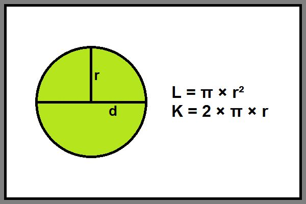

Pembelajaran 2: Mengenal Keliling dan Luas Lingkaran
Tujuan Pembelajaran
- Menjelaskan pengertian keliling dan luas lingkaran serta bagian-bagian penting dari lingkaran (titik pusat, jari-jari, dan diameter).
- Mengidentifikasi rumus keliling dan luas lingkaran secara tepat.
- Menghitung keliling lingkaran dengan menggunakan rumus 𝐾 = 2𝜋𝑟 atau 𝐾 = 𝜋𝑑.
- Menghitung luas lingkaran menggunakan rumus 𝐿 = π r2.

Pembahasan: Keliling Lingkaran
Keliling lingkaran adalah panjang dari seluruh sisi lingkaran. Untuk menghitung keliling lingkaran, kita bisa menggunakan dua rumus utama:
- K = 2 π r, di mana r adalah jari-jari lingkaran.
- K = π d, di mana d adalah diameter lingkaran.
Contoh: Jika jari-jari sebuah lingkaran adalah 7 cm, maka kelilingnya adalah:
K = 2 π r = 2 × 3,14 × 7 = 43,96 cm
Pembahasan: Luas Lingkaran
Luas lingkaran adalah ukuran daerah di dalam batas lingkaran. Untuk menghitung luas lingkaran, kita menggunakan rumus berikut:
- L = π r2, di mana r adalah jari-jari lingkaran.
Contoh: Jika jari-jari sebuah lingkaran adalah 7 cm, maka luasnya adalah:
L = π × r2 = 3,14 × 7 × 7 = 153,86 cm²
Bagimana Rumus Luas Lingkaran di dapat?
Untuk membuktikan rumus luas lingkaran, kita dapat menggunakan pendekatan melalui pemotongan lingkaran menjadi beberapa bagian kecil yang menyerupai bentuk segitiga.
perhatikan animasi berikut:
Sehingga Jika kita menyusun juring-juring tersebut secara berselang-seling (satu ke atas, satu ke bawah), bentuknya akan menyerupai segiempat atau setengah persegi panjang.
Semakin banyak jumlah juring (semakin tipis), maka bentuk tersebut akan semakin mirip persegi panjang.
Ukuran "persegi panjang" tersebut:
- Panjang ≈ setengah keliling lingkaran = 𝜋𝑟
- Lebar = jari-jari lingkaran = 𝑟
jadi,didapat luas lingkaran adalah L = π r2
Contoh Soal
-
Soal 1: Diketahui jari-jari sebuah lingkaran adalah 14 cm. Hitunglah keliling lingkaran tersebut!
Penyelesaian:
K = 2 × π × r = 2 × 3,14 × 14 = 87,92 cm -
Soal 2: Sebuah lingkaran memiliki diameter 10 cm. Berapakah luas lingkarannya?
Penyelesaian:
r = 10 ÷ 2 = 5 cm
L = π × r² = 3,14 × 5 × 5 = 78,5 cm² -
Soal 3: Sebuah lingkaran memiliki keliling 62,8 cm. Jika π = 3,14, berapakah jari-jari lingkaran tersebut?
Penyelesaian:
K = 2 × π × r → r = K ÷ (2 × π) = 62,8 ÷ (2 × 3,14) = 10 cm
Coba Hitung Sendiri
Video Pembelajaran: Keliling dan Luas Lingkaran
Yuk, simak video berikut agar kamu lebih memahami bagaimana cara menghitung keliling dan luas lingkaran dengan mudah!
✏️ Latihan Interaktif: Luas & Keliling Lingkaran
Isilah jawaban dari soal-soal berikut ini, lalu klik "Cek Jawaban" untuk melihat hasilnya.